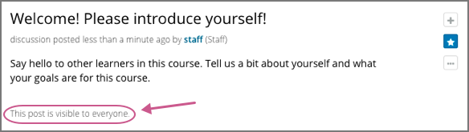
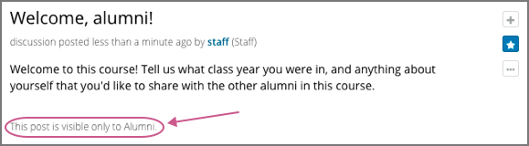
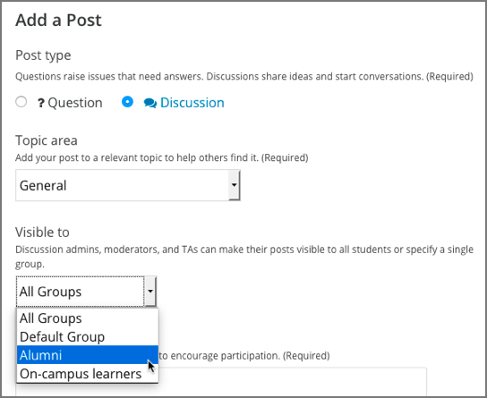
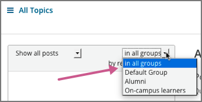

17.4. Managing Divided Discussion Topics#
This section provides information about managing discussions that are divided based on learner groups (cohorts).
For more information about divided discussions, see About Divided Discussion Topics.
Note
You must set up divided discussions before your course starts. You cannot divide discussions after the course start date. For more information, see Setting Up Divided Discussions.
17.4.1. Overview#
In discussion topics in your course, every post has an indicator of who can read it: either all learners, or only the members of a particular group. For learners, this is the only noticeable difference between discussions in courses that use divided discussions, and courses that do not have groups and do not use divided discussions.
You can share the examples in the Read the Group Indicator in Posts section with your learners. The Participating in Course Discussions section in the Open edX Learner’s Guide also provides useful information to help learners make the most of their participation in course discussions.
Course team members who have the Discussion Admin, Discussion Moderator, Community TA or Group Community TA role see the indicator of who can read each post. Team members with these roles, except for Group Community TAs, can read and contribute to every post, regardless of the group membership of the learner who posted it. Group Community TAs can moderate discussions only if the course uses divided discussions, and they can see and manage only posts that other members of their group add. Community TAs, in comparison, can read and contribute to all posts.
Note
Course team members must have the Discussion Moderator or Discussion Admin role in addition to the Staff or Admin role to be able to view posts that are divided by group. For information about assigning discussion moderation roles, see Assigning Discussion Moderation Roles.
In courses where cohorts are enabled, course team members who have discussion moderation roles that are not restricted by group can also perform the following actions.
Choose who will be able to see the posts that they add to divided topics. See Choosing the Visibility of a Post.
Filter the posts that are listed on the Discussion page by group. See Viewing the Posts of a Group.
All of the other options and features described in the Creating Course Discussions, Moderating Discussions, and Running Course Discussions sections continue to be available to the discussion moderation team.
17.4.2. Identifying Who Can Read a Post#
In discussion topics in your course, all posts include a group indicator above the title. This indicator appears after any learner or team member adds a post. No configuration is necessary to include this identifier, although if you use divided discussions in your course, you should use care in naming your groups, because learners see the group names in the group indicators for each post.
Optionally, you can name your discussion topics to make it clear to learners who their posts will be viewed by. See Apply Naming Conventions to Discussion Topics.
17.4.2.1. Read the Group Indicator in Posts#
Every post includes a sentence that identifies whether everyone can see and contribute to it, or only the members of a group in the course. Examples follow.
 {kind=link}
{kind=link}
You see this identifier after you add your post. All of the responses and comments that other contributors add to a post are visible to the same group of people as the original post.
17.4.2.2. Apply Naming Conventions to Discussion Topics#
Optionally, course team members can give learners the audience context of their posts before they add them. Indicating who will be able to read posts in the names of the topics themselves can be useful when a group is particularly sensitive about the privacy of their conversations.
For example, you could add “(everyone)” to the names of the unified course- wide discussion topics in your course. Similarly, you could apply a naming convention to content-specific discussion topics that you add as discussion components in Studio. For example, you could include an identifier such as “(private)” or “(small group)” in the Subcategory name of every Discussion component that you add.
When learners visit the Discussion page and use dropdown lists to select a discussion topic, the topic names indicate who can see the posts, responses, and comments.
For more information about adding and configuring course-wide discussion topics, see Create Course-Wide Discussion Topics and Divide Course-Wide Discussion Topics.
17.4.3. Choosing the Visibility of a Post#
Course team members who have the Discussion Admin, Discussion Moderator or Community TA role can make posts to divided discussion topics visible to everyone who is enrolled in the course or only to the members of a specified group.
If you are a course team member with one of these roles, when you add a post, the Visible to dropdown list appears above the Title field.
Note
Group Community TAs cannot choose the group visibility of a post. Unlike Community TAs, Group Community TAs can only add post to, and interact with, discussion topics that are available to the same group that they themselves belong to.
This example shows a new post being added to a content-specific discussion topic.
When you add a new post in discussion topics that are divided, you can choose whether all learners or a specific group of learners can see your post. This means that you can add a single post with information that you want everyone to see, rather than having to write a separate post for each group. It also means that it is possible for you to unintentionally share information with a different audience than you intended.
Note
Learners cannot choose the visibility of their posts. The visibility of learner posts is determined by the configuration of the topic they post in. See Identifying Who Can Read a Post.
Posts that discussion team members add to unified discussion topics are always visible to all learners, regardless of what group they belong to.
17.4.3.1. Considerations When Editing Posts#
Keep these additional considerations in mind when you edit posts in a course that includes learner groups (cohorts).
You cannot change the visibility of a post after it has been added. If you notice that a post contains information that is not appropriate for the group who can read it, edit the content of the post or delete the post.
If you change the topic that a post appears in, the visibility of the post and its responses and comments does not change. This ensures that learners who are following the post, or who have contributed responses or comments to it, will still be able to read it.
All of the responses and comments that are contributed to a post will be visible to the same group of people as the post itself. You cannot change the visibility of individual responses or comments.
17.4.4. Viewing the Posts of a Group#
When a course includes learner groups (cohorts), you can view posts and monitor discussion activity for each of the groups. You can also view all posts.
Note
Course team members must have the Discussion Admin or Discussion Moderator role in addition to the course team Staff or Admin role to be able to view and filter all posts that are divided.
In divided discussions, Group Community TAs can only view posts that are visible to the group that they themselves belong to.
Above the discussion navigation pane on the Discussion page, the in all groups filter is selected by default. You see every post when you make this selection. To limit the list so that you can view the same set of posts as the members of a particular group, select the name of that group.
Note that both of these lists include posts that are visible to everyone. When you filter the list by a specific group, you see the same, complete set of posts that the members of that group see.
For other options that you can use to view posts, see Moderating Discussions.